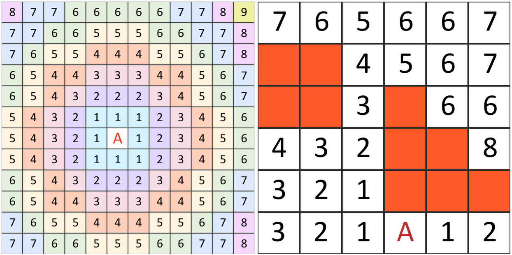

Spellseeker is a turn-based, squad-oriented tactical combat system set in a fantasy-modern world. The player battles mythical creatures and ferocious monsters, employing conventional weapons and incredible magical spells based on a collectible card system.
Gameplay Overview
Gameplay is turn-oriented. The player controls a squad of warriors individually referred to as units. A turn consists of the beginning of turn step, followed by each unit a player controls making a move (paid for with movement points) and then taking an action (represented by the symbol), finally followed by the end-of-turn step.
One of the most important game actions is casting spells. Spells are cards that the player plays from their spell deck, a deck of at least 50 cards constructed before the game begins. Spells can be cast at any time on a player's turn or in certain other circumstances. See Spellcasting for more information.
Beginning of Turn Step
At the beginning of a player's turn, the player draws a card. Next, each unit the player controls gains 1 mana (). Finally, one (time marker) is removed from each card in play with one or more on it.
Movement and Distance
All units have a movement speed. When a unit takes a turn, it gains (movement points) equal to its movement speed. Units can move a number of squares by spending an equal number of movement points, but moves must be continouous (it's not possible to partially move and then decide to move further or to abort the movement halfway through). Units cannot move into blocked squares.
Some actions, such as attacking with certain weapons, have a speed penalty associated with them. Because these actions take longer than normal actions, movement points must be spent to complete the action.
Line of Sight is checked for each square during movement, and entering the line of sight of an enemy who has taken the Hold action can immediately provoke a Reaction.
Distance is calculated by counting the squares on the path between the origin and destination. Diagonals are counted in alternating fashion, such that the first diagonal move counts as one square and the second counts as two. The diagrams below illustrate the distance between the A square and various other squares.

Actions
After the beginning-of-turn step and making a move, the unit gets one to spend on an action, either one of the standard actions below or to pay for a spell or card activation with "" in the cost.
Sprint Action
The unit gains equal to its movement speed, which it can spend to move. This is in addition to its normal movement for the turn.
Attack Action
The unit uses its equipped weapon to attack an enemy in range, dealing damage if a hit is scored. See Combat.
Reload Action
The unit reloads their equipped weapon. Weapons must be reloaded occasionally to ensure that they don't run out of ammunition. See Guns.
Hold Action
The unit stays on watch, prepared to respond to enemy activity. It may get an opportunity for a reaction to enemy activity. See Reactions.
End of Turn Step
After all units have finished taking actions and moving, the end of turn step begins. Unspent and are lost. If the player has more than 5 cards in hand, they discard down to 5 cards.
Cards
Cards in Spellseeker are the basis of the game. They are the reward for successful adventuring -- killing enemies results in new cards for the player to add to their spell deck. There are various card types present in the gamee:
-
Spell Cards can be cast by the player by paying the
appropriate costs during their turn, or at certain other times (See Spellcasting for more information). Spells
have two possible subtypes:
- Immediate spells are one-time effects. The caster pays their costs, the effects resolve, and then the card is discarded.
- Ongoing spells stay in play after being resolved, continuing to have an impact, instead of being discarded.
- Equipment cards represent tools used the units which give them special abilities and ongoing effects. See Equipment for more information.
- Enemy cards represent the various foes the player can encounter during the game, describing their abilities and basic statistics.
- Spellseeker cards represent the different units controlled by the player, and also display their basic statistics such as movement speed.
Combat
Line of Sight
Cover
Range
Hits
Damage
Health, Unconsciousness, and Death
Spellcasting
Spell Decks
Spell Timing
Effect Resolution
Reactions
Reading a Spell Card
Spell Schools
Equipment
Guns
Appendix A: Hit Probabilities